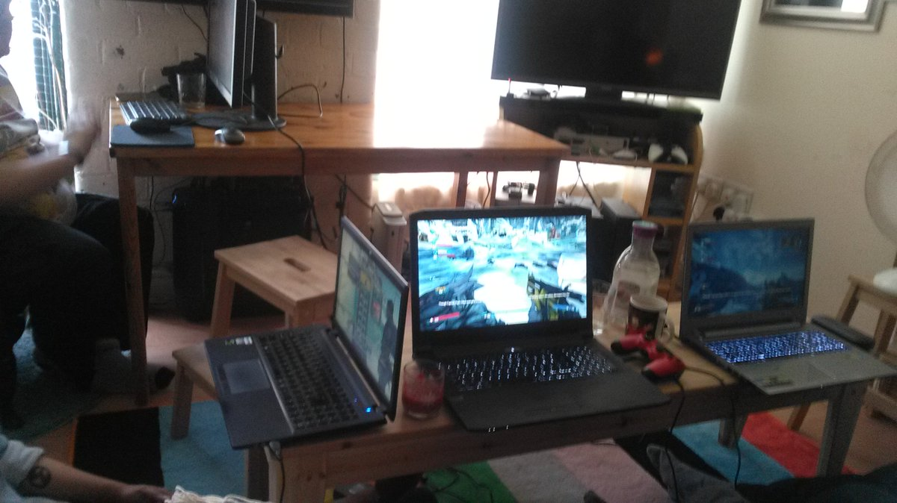
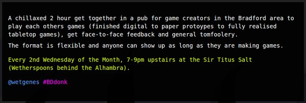
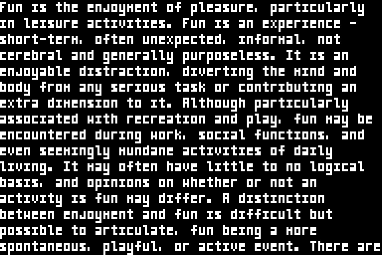

Last night was all https://www.youtube.com/watch?v=76wSk1j02_4 Tonight is going to be all https://www.youtube.com/watch?v=gm7rmRgm5TY #bradford @infest_uk :)
https://twitter.com/sgtruck/status/769496903696392192 @sgtruck friction easy, Teleporter accidents leading to brundlefly like abominations is the problem. https://www.youtube.com/watch?v=Ovh_juW2rpU
Added shadertoy inputs to the "copper" layer.
EG -> https://www.shadertoy.com/view/Ms2SD1
#gamedev #fundev
Now featuring a half working lua binding for @chipmunk2d :)
#gamedev #fundev
https://twitter.com/wetgenes/status/765454457933033473 Scanline style filters and bloom really do go hand in hand, the filter darkens everything and then the bloom brightens it back up. :)
and of course bloom without scanlines is a like a soft boiled egg without sweet soy sauce.
#gamedev #fundev
Wowsers, bloom sure makes gifs far too large. #gamedev #fundev
Obviously we will need copper style backgrounds.
#gamedev #fundev
http://store.steampowered.com/app/426790
Looks like Grow Up is out. :)
@CharlotteGore Well gif is a pretty terrible format for video, it would be better if you could just tell twitter to loop/repeat video.
GIF export test, yay :)
However this reminds how much I dislike GIF.
The PNG peeps really need to accept APNG.
@CharlotteGore Borderlands 2, there are only a handful of coop games that support 4 players and borderlands is the top pick.
Game on .
OK, this was last Saturday but give it a couple of hours and I'm sure this Saturday will be the same :) 
oh, twitter is really only happy with gifs?
https://twitter.com/shi/status/764895325479923713 @shi a couple of meg, twitter turns it into an mp4 anyhow so we might as well upload mp4.
https://twitter.com/IcepickInTheory/status/763026698803802113 @IcepickInTheory But lazy is our word, so it is OK for one developer to call another developer lazy but it is not OK when non-devs use it.
https://twitter.com/IcepickInTheory/status/763024833479380996 @IcepickInTheory pffft that stuff is so easy to add that the only reason for a game not to have it is lazy developers. Everyone knows that.
This is your reminder, tomorrow is the #Bradford #GameDev #Meetup in a #Pub.
All welcome. 
https://twitter.com/shi/status/762687593079312384 Easy enough to push it up to 4x8 @shi Mostly the same font but with proper descenders and gives it space to breath. 